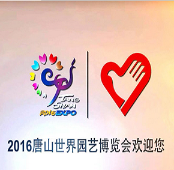
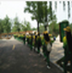

志愿之行



- 世园会社会志愿者接受系统培训2016-04-22
- 世园会小唐园的“集赞之旅” 2016-05-10
- 常记功臣养老院老军人喜游世园会2016-05-03
- 文警全员上路迎“大考”2016-05-03
- 唐山学院328名志愿者走上服务岗位 2016-06-24
- 第二批社会志愿者风采掠影 2016-08-01
- 第五服务季志愿者诗歌朗诵会近日举办 2016-08-08
- 世园会志愿服务及启航 2016-08-29
唐山师范学院小唐园风采掠影
5月31日，2016唐山世园会志愿者——唐山师范学院小唐园走进世园会，开始了他们... [详细]
志愿服务精神提倡志愿者欣赏他人、与人为善、有爱无碍、平等尊重，这便是友爱精神。志愿服务包含着深刻的互助精神，它提倡"互相帮助、助人自助"。进步精神是志愿服务精神的重要组成部分，志愿者通过参与志愿服务，使自己的能力得到提高，同时促进了社会的进步。